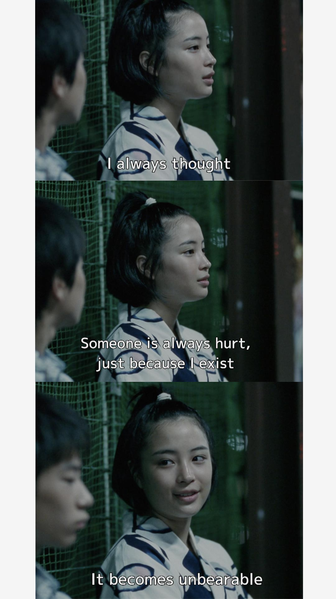

I was browsing Instagram Reels (which is honestly very rare for me to do nowadays - I only open TikTok when I want to go through my reposts and bookmarks of things I want to do in Sydney) when I encountered a reel shared by a friend about a movie called “Our Little Sister.” It was enough to convince me to watch it almost immediately as the plot is touching something deep within my soul.
After watching the it, I’ve never felt more seen in a movie than ever.
“Our Little Sister” (2015) is a Japanese film by Hirokazu Kore-eda which is about the death of a cheating father whose daughter from his last wife eventually lived with her half-sisters from the other. It unravelled a lot of buried feelings I had within me. Feelings which I had already forgotten because it’s not worth lingering on at the moment. It used to affect me almost every day back when I was in high school and especially college to the point that I pitied myself for it. It was very toxic personally, but it’s a good thing I kept a lot of it to myself instead of transferring that weight onto another person. I guess that was also one reason why I avoided deep relationships back then: because I don’t want to burden them with my despair.
In the movie, the protagonist, Suzu Asano, is a very shy single-child from the last marriage of his father. She has three other half-sisters who are much older than here and I presume she hasn’t met before their father’s death. Her half-sisters saw Suzu’s meekness and what she had to endure from her parents infidelity; took her in, and loved her unconditionally.
What feelings did it unravel from me? The sense of belonging and love which was stolen from me even before I was born - because of my parent’s infidelity. I am a bastard single-child. When I was born, my father had already been married to someone else whom they already had kids with before me. He was someone from the military who frequented Camp Aguinaldo in Quezon City, Philippines. I think the story goes is that him and his friends would frequent this bar just beside Robinson’s Galleria in Ortigas Center. My mom was working in that bar back then and that’s how they met. I don’t know the specifics why my dad would cheat on his wife, nor the reason why my mom would agree to it - I’m just too scared to ask. But anyway, I was born, and for the rest of my life, I felt like a ticking time-bomb, a burden to people - simply because I exist.

The one scene I felt the most scene was when Suzu Asano was talking to a boy she was flirting with. In it, she says: “I always thought someone is always hurt just because I exist. Sometimes it becomes unbearable.”
I feel like I’m a ticking time-bomb. My existence is enough to ruin literally an entire family because I was a product of an affair. There are times where I would meet my dad in the mall and he would bump into a friend, or a colleague. My mom and I would run away. When we’re walking, my dad would usually walk by himself to not arise any suspicion.
I also have half-siblings on my father’s side. I don’t even know how many they are. I sometimes wonder how would they act if they found out about me. Would they accept me lovingly like in this movie? Or would they look at me with disgust and anger because I’m the product of their father’s infidelity?
I feel like I’m also a burden to my dad. He was 50-years-old when he had me - just 10-years before he retires. He had to pay a hefty fee to pay for my schooling. Back when I was entering college, I knew that there was only one I wanted to go to. When I passed it, I felt so ashamed to have to beg to get in. I know it’s my right, and that I deserve after what they put me through. My dad still paid for it albeit at a reduced allowance. Sometimes my mom would make me feel guilty for just wanting it.
I can’t also buy the things I want as much as I can, nor go to the places I want. There wasn’t enough money. It’s hard as a kid to want something, but can’t. And when I do ask for something, I feel so guilty and a big burden for it so much that I just suck it up.
There is also the case about being loved. I guess what touched me in the film is the idea of having a sense of belonging in a healthy family: where I can just express myself freely and feel that I am safe. I never had that ever in my life because I was a single-child. Every problem I had back then, I had to navigate through them by myself without consulting others. I became too independent to the point that I didn’t know anymore how to take care of someone else. What’s more, I also used to really wish that I can find that “family.” Sometimes, things get very lonely to the point that I wish my half-siblings would just suddenly find out about me and want to meet me. I guess this film just shows a life which I could’ve had - the happiness that I always longed to have, but was stolen from me through infidelity.
Then there’s is also consequences. That heaviest burden which I carry in my life is that I inherited the consequences of my dad’s infidelity. Suzu felt it too as per this scene. She internalized the consequences of her father’s actions. Though she didn’t choose the circumstances of her birth, she feels responsible for the pain caused by the affair — to her sisters, to their mother, to the family as a whole. I felt like I’m the one who is suffering because of an action which I never did. I was deprived of family love, a home, and inherited the pain I can cause.
This feeling consequently imposes the fear of being rejected: a deep fair that we might not be wanted. I always get the feeling that people only do things for me out of obligation. Like: “Ok, he’s already here so I’ll just go with it.” I feel it all the time. Admittedly, I also feel it with my mentors here but not that much. I think this is because I had to carry the emotional burdens that isn’t mine. And I’m left to wonder: do I deserve anything at all?
Sometimes, I like to think I’m a mistake. I’m just a burden. Because I exist, my parents and other people just have to take care of me. As sad as it is, I used to just think how much more better it will be if I didn’t just exist, that what if I would just suddenly die.
These are my buried feelings that the film unravelled.
I find it amazing how I forgot about it - or how easy it is for me to forget about things. I used to be the edgy/sadboy type of guy back then (it was absolutely disgusting, thank god I didn’t portray all of my burdens to anyone back then.)
I guess eventually, I just learnt to to give up and pursue that happiness on my own. I stopped yearning for that “Our Little Sister-” type of scenario. I put my foot down, worked on myself, and tried to become better.
Frankly, remembering this: there is nothing for me waiting at home but pain. When I took that risk and moved to Australia, it was the period when I felt truly free. I guess my “Our Little Sister” moment was moving to Australia, riding that comfortable public transport, experiencing the four seasons for the first time, being met with warm love by the amazing people here, and strolling through parks and suburbs, appreciating flowers and other fauna which I’ve never seen before.
Self-pity will only lead you to nowhere. You shouldn’t let anyone like your parents, friends, exes, or any other people you associate your trauma to, dictate your happiness in the future. Let go, take risks, and have courage. There’s no happiness found in browsing TikTok or Reels 24/7, listening to toxic sadboy-shit songs, and blaming yourself/other people for who you became. Take the initiative. Love yourself. Change. Peace and happiness will soon follow.
I blame my parents for a lot of things in my life, silently. Admittedly, I’ve grown very sensitive against cheaters. Even if it’s not physical, emotional cheating is as grave of a sin for me. Because I am a product of cheating and all of the burdens of my existence are a result of it. Never will I have predicted that I will also be cheated for another guy. I guess it just sucks that when I did finally try to pursue “it,” it just affirmed all my fears and reservations on why I didn’t want “it” in the first place.
Yet, I can’t let those feelings linger. Not now. I was supposed to write here how much I hate those people for cheating on me (whether to have me or emotionally.) Yet, I am cursed. I am cursed to have an immense amount of empathy and understanding of people. So much that when these do happen, I just suck it up, internalize the pain, and carry the burden of it by myself. Because that’s just love, I guess.
My mom’s not perfect - but I do not doubt her unconditional love for me. She had really shit parents who just threw her around as a kid and didn’t want to take full responsibility for her. She also had a first child (yes, I have another half-sibling on my mother’s side) who succumbed to drugs, sex, and vices and threw away her life because she wasn’t present. My mom tried her best. She made sure I have lots of toys to play with as a kid. She made sure I slept in a comfortable air-conditioned room. She made sure to show me the love that her parents didn’t show her. I never told her these feelings because she didn’t deserve it - after all that she is doing to me, so I held it in.
For my dad, I don’t have a clear understanding of him. From what I can assume, he is one of the sympathetic and most kind person that my mom knows. She keeps on saying that amongst all of the relationships my mom had, my dad is the only person she didn’t have trouble with. She said that the only “problem” was that he’s married. My dad persisted on his responsibility. He always gave me an allowance and paid for all of my school fees (including a very expensive university.) He never failed to give financially even though it is hurting him - up until I left for Australia. I guess that’s just one form of love that he can at least do.
The love that they gave is not enough for a lifetime. But it is just enough love for me to know what love is.
Yet, I feel right now that maybe I’m just not meant for it. That I don’t know how to give love properly, or love like a normal person and that will just affect any relationship/s I might have.
It’s just one of the burden I carry just because I exist. I can’t feel like Suzu Asano in the film. I’m not meant to have anything stable and healthy. I inherited this from my parents. I feared this from my mom’s exes. I affirmed this with my recent relationship. I just exist to give pain to others.
I know I’m sounding self-pitiful here, but I guess these feelings just came from the emotions I had to suck-up. That I had to tell myself that everything was my fault, because I exist.
Maybe self-therapy is not as healthy as I expect it to be. It messes-up my brain. Maybe I do need someone - like Asano’s half-sisters.
I think right now, I’m just asking to be silently assured: to be told I’m not a mistake. Maybe, I just desire to just be accepted for once in my life.